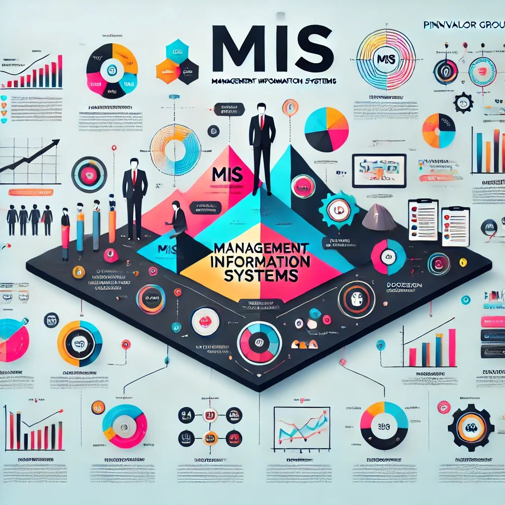

Management Information Systems (MIS) have traditionally been regarded as core support structures in corporate decision-making. From tracking operational efficiency to ensuring financial reporting accuracy, MIS provides invaluable insights for businesses. However, in today’s dynamic world, the potential of MIS extends far beyond these conventional boundaries. It can become a catalyst for innovation, societal advancement, and creative transformation across various domains.
In this blog, we explore unconventional applications of MIS and how they can drive future growth.
Takeaways
MIS plays a vital role in sustainability by helping organizations monitor and improve their environmental impact.
The integration of AI and MIS enables smarter, faster decision-making but requires a balance between automation and human expertise.
Creative industries can harness MIS to track global trends and enhance artistic innovation, blending data and imagination.
1. Creative Innovation: Where Data Meets Imagination
While MIS typically focuses on business metrics like profitability, creative industries are discovering new ways to integrate data-driven insights. Companies in media, entertainment, and design are leveraging MIS to shape content strategies and consumer experiences. For example, platforms like Spotify use MIS-driven algorithms to recommend playlists, aligning creativity with user behavior data.
Potentially, MIS could evolve to serve artists, writers, and producers by analyzing global cultural trends, ensuring creative output resonates with audiences in diverse markets.
Key takeaway: Creativity thrives on innovation. MIS can empower artists and creators to predict trends and craft impactful works that capture global imagination.
2. Sustainability and ESG Tracking
With environmental, social, and governance (ESG) factors becoming critical to business strategies, MIS is now playing a vital role in sustainability. Real-time monitoring of energy consumption, waste management, and carbon emissions allows businesses to minimize their ecological footprint. By integrating sustainability goals into daily operations, organizations can enhance their public image and compliance efforts.
Imagine a future where MIS dashboards provide comprehensive views of an enterprise’s impact on global ecosystems, empowering leadership to make greener decisions.
Insight: Companies can become leaders in sustainability by leveraging MIS for transparent, data-driven eco-friendly initiatives.
3. Human-Centric Wellness and Productivity
Employee well-being is no longer a soft metric; it directly impacts organizational success. MIS is now capable of synthesizing data from wearable devices, HR systems, and productivity platforms to create a holistic view of workplace health. Such insights help identify early signs of burnout and disengagement, enabling proactive interventions.
Companies embracing wellness-focused MIS have reported improvements in retention rates, job satisfaction, and overall productivity.
Actionable Tip: Invest in wellness-focused MIS to promote healthier, more engaged workforces and reduce long-term costs.

4. The Fusion of AI and MIS
Artificial Intelligence (AI) is revolutionizing how MIS generates insights. Predictive analytics, natural language processing, and machine learning models are transforming data into strategic foresight. AI can quickly detect patterns humans might overlook, providing dynamic decision-making support.
The challenge lies in balancing automation with human expertise. Organizations must design MIS solutions that enhance collaboration between AI and employees, ensuring that data-driven decisions reflect both efficiency and empathy.
Future outlook: AI-driven MIS will redefine how businesses innovate, making decisions smarter and more intuitive.
5. Future-Proofing the Workforce
As remote work, freelancing, and decentralized teams become mainstream, organizations need new approaches to productivity management. MIS can provide real-time insights into workforce engagement, collaboration effectiveness, and project timelines, without resorting to intrusive micromanagement.
Advanced MIS platforms can foster trust and transparency, empowering employees to work autonomously while maintaining accountability.
Strategy: Embrace remote-friendly MIS tools to stay competitive in an evolving labor market.
Conclusion: Rethinking the Boundaries of MIS
The future of MIS lies in its adaptability and potential to inspire innovation. By stepping beyond traditional applications, organizations can harness MIS to create meaningful change—not just in business performance, but in creative industries, sustainability efforts, and societal development.
As businesses evolve, those willing to explore these unconventional paths will unlock new avenues for growth and impact. The question is: Are you ready to reimagine your MIS?